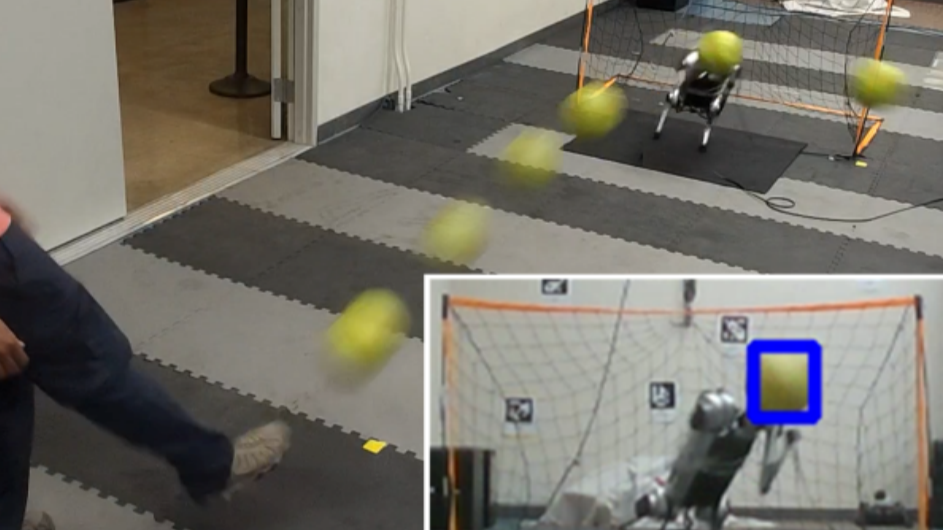
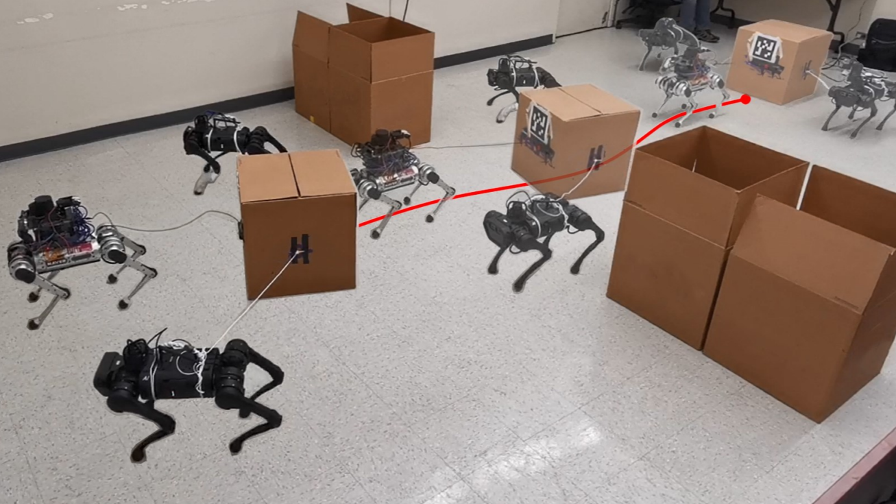

Publications
2024
2023
-

Creating a dynamic quadrupedal robotic goalkeeper with reinforcement learning
Xiaoyu Huang, Zhongyu Li, Yanzhen Xiang, Yiming Ni, Yufeng Chi, Yunhao Li, Lizhi Yang, Xue Bin Peng, Koushil Sreenath
2023 IEEE/RSJ International Conference on Intelligent Robots and Systems (IROS)
[Paper] -

A Heterogeneous SoC for Bluetooth LE in 28nm
Felicia Guo, Nayiri Krzysztofowicz, Alex Moreno, Jeffrey Ni, Daniel Lovell, Yufeng Chi, Kareem Ahmad, Sherwin Afshar, Josh Alexander, Dylan Brater, Cheng Cao, Daniel Fan, Ryan Lund, Jackson Paddock, Griffin Prechter, Troy Sheldon, Shreesha Sreedhara, Anson Tsai, Eric Wu, Kerry Yu, Daniel Fritchman, Aviral Pandey, Ali Niknejad, Kristofer Pister, Borivoje Nikolic
2023 IEEE Hot Chips 35 Symposium (HCS)
2022
-

Collaborative navigation and manipulation of a cable-towed load by multiple quadrupedal robots
Chenyu Yang, Guo Ning Sue, Zhongyu Li, Lizhi Yang, Haotian Shen, Yufeng Chi, Akshara Rai, Jun Zeng, Koushil Sreenath
IEEE Robotics and Automation Letters